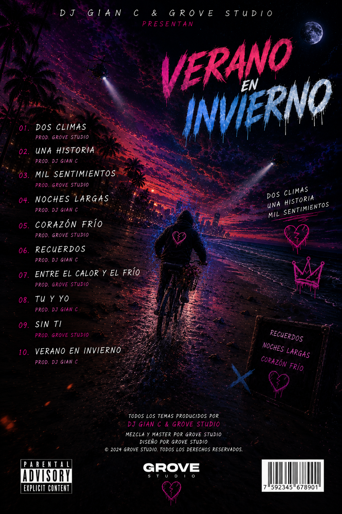

DOS CLIMAS UNA HISTORIA
Este álbum mezcla el calor de una playa de madrugada con el frío que deja una despedida.
Inspirado en sonidos urbanos, synths oscuros, reggaetón melancólico y visuales neon.
Cada canción se siente como manejar solo por la costa a las 3AM mientras los recuerdos vuelven.
“Dos climas. Una historia. Mil sentimientos.”